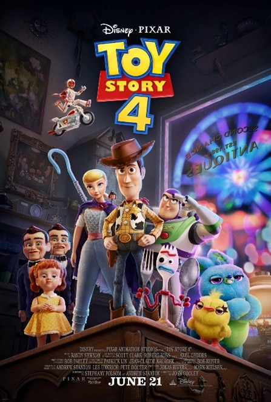
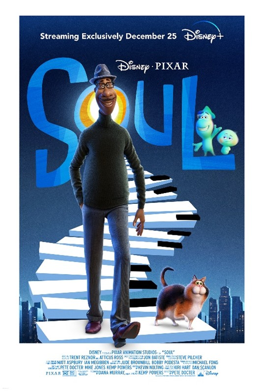
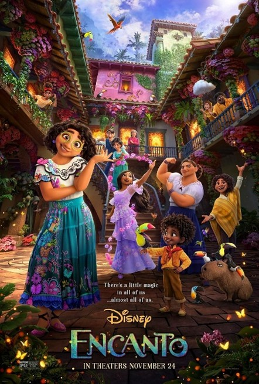
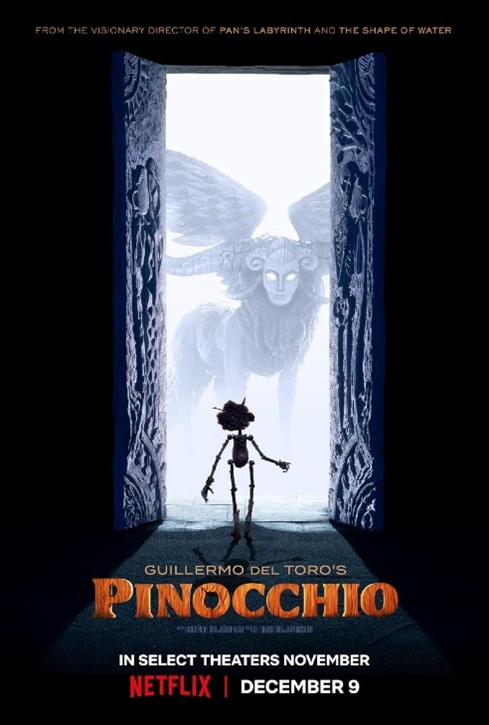
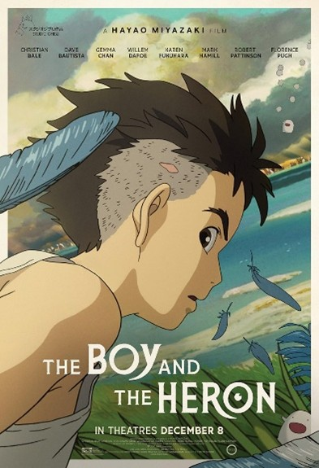
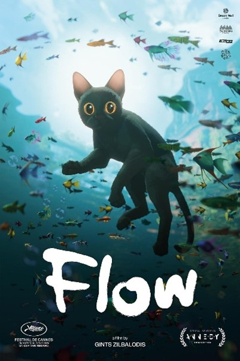

Best Picture Winners
2020 - 2025

2019: Toy Story 4
This chapter follows Woody and the gang as they welcome a reluctant new "toy" named Forky. During a road trip, Woody reunites with a long-lost friend, Bo Peep, leading him to question his own purpose and what it truly means to be a toy in a world that is much bigger than a single child's bedroom.

2020: Soul
Joe Gardner, a middle-school band teacher and aspiring jazz pianist, finally gets his big break before a freak accident sends his soul to "The Great Before." To return to Earth, he must team up with 22, a cynical soul who has never understood the appeal of the human experience, leading to a profound exploration of what makes life worth living.

2021: Encanto
Deep in the mountains of Colombia lies the Casa Madrigal, a magical home where every family member is bestowed with a unique "gift"—except for Mirabel. However, when she discovers that the magic surrounding the Encanto is in danger, she realizes that being the only "ordinary" Madrigal might make her the family's last hope.

2022: Guillermo del Toro's Pinocchio
Set in Italy during the rise of Fascism, this stop-motion reimagining brings a darker, more soulful tone to the classic tale. It focuses on the woodcarver Geppetto and his wooden creation, exploring themes of imperfect fatherhood, the nature of mortality, and the importance of disobedience in a world demanding conformity.

2023: The Boy and the Heron
Following the loss of his mother during the war, a young boy named Mahito moves to a remote country estate. There, he is led by a mysterious talking heron into a fantastical world shared by the living and the dead, embarking on a surreal journey of grief, creation, and maturing.

2024: Flow
In a world reclaimed by water, a solitary cat is forced to share a small boat with a diverse group of animals, including a capybara, a lemur, and a bird. This visually stunning, dialogue-free odyssey follows their struggle to survive a great flood, emphasizing the necessity of trust and cooperation across species.